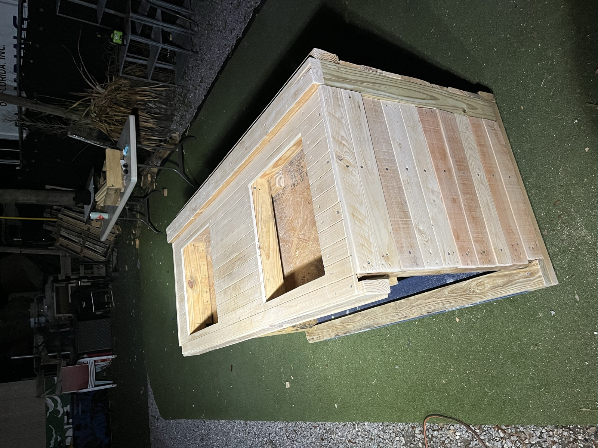
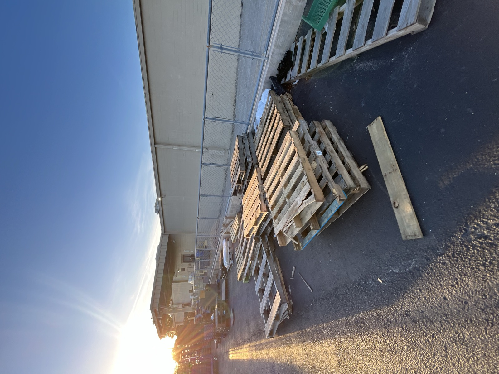
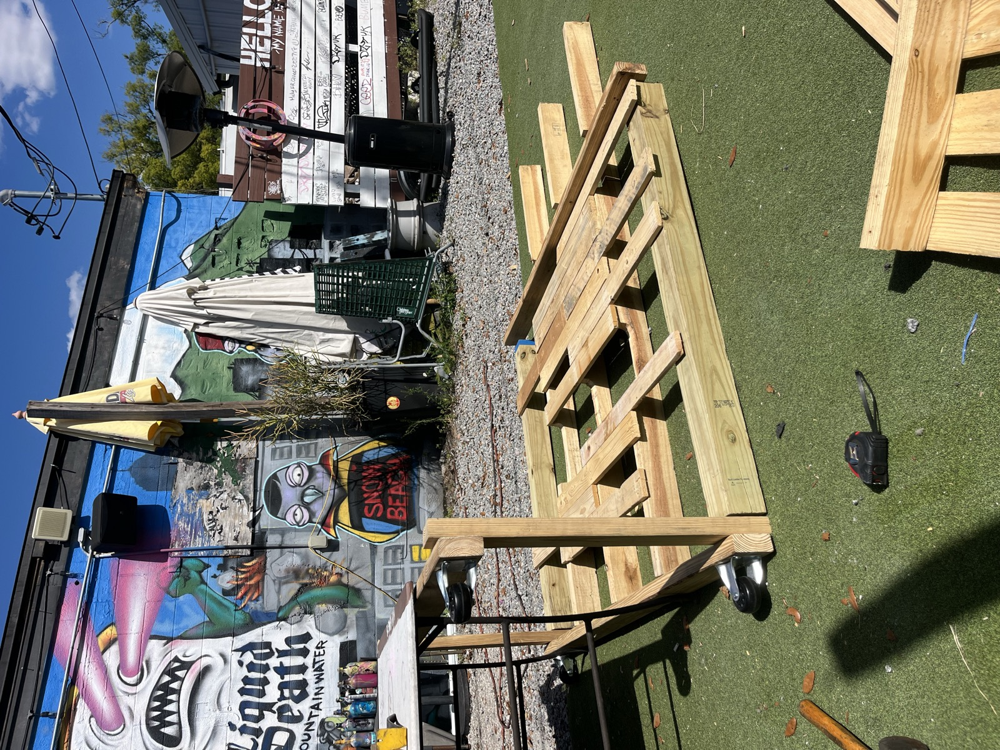
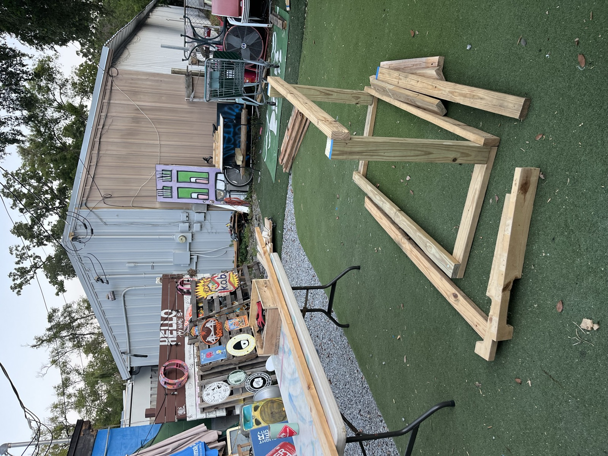
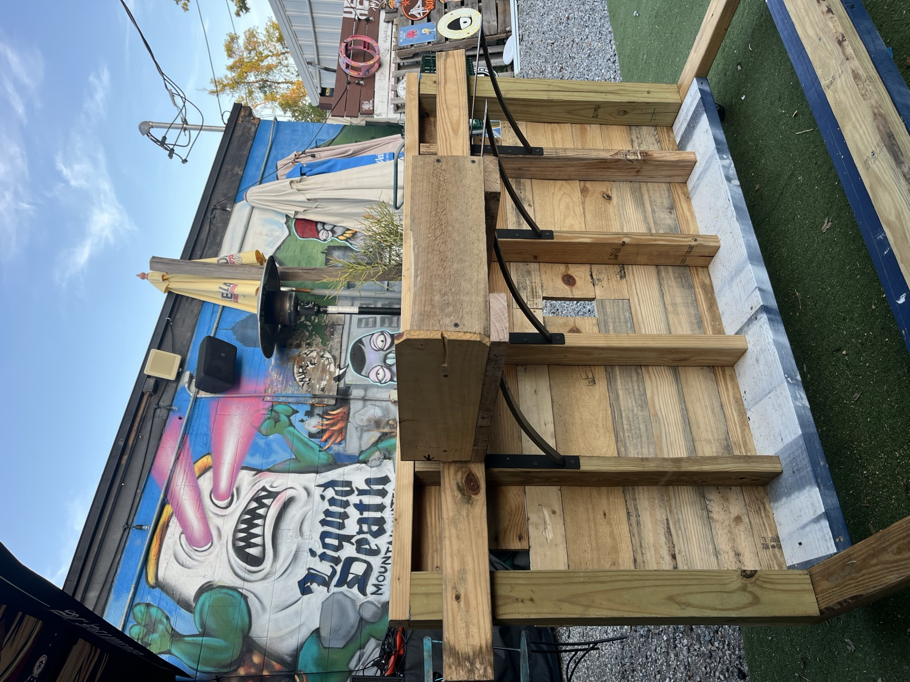
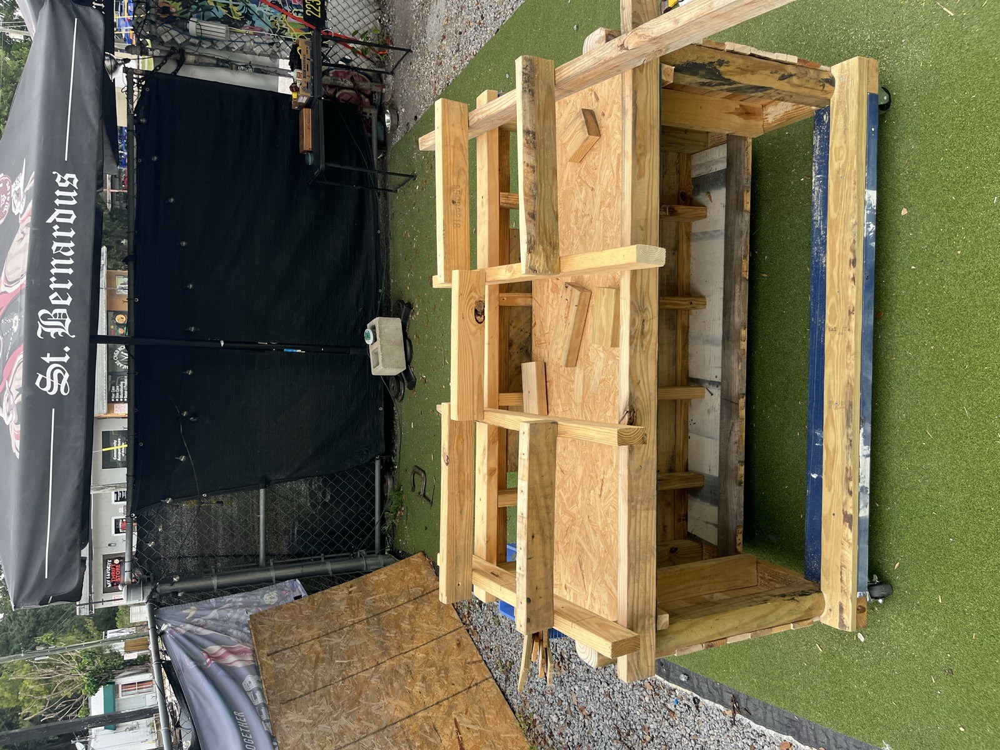
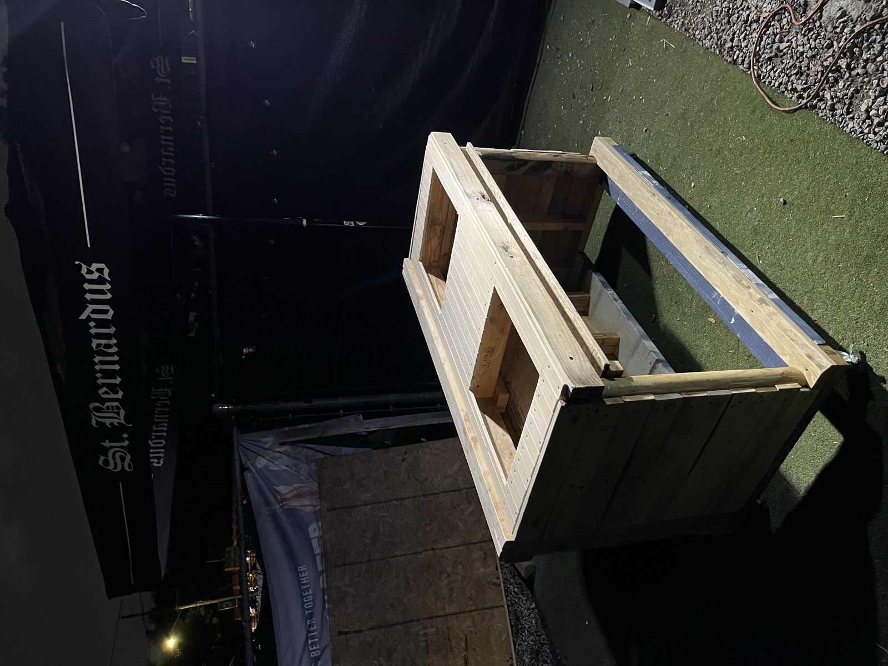

Always ask
Do not take pallets off a property without permission, even when they look abandoned.

Zero-waste · 100% upcycled · no filler
A hands-on class in sourcing, preparing, and building furniture from reclaimed pallets—the wood that was headed for the landfill. Read, check your knowledge, then go build.
Your progress
0 of 6 modules complete. Progress is saved on this device.
Course modules
Pallets are one of the few genuinely free building materials. Many businesses pay to have them hauled away, so a polite ask often gets a yes.
Do not take pallets off a property without permission, even when they look abandoned.
Front-line staff may not have authority to release them. A manager usually knows.
Skip cracked, soaked, contaminated, or rotten pallets just because they are free.
Good places to ask: hardware stores, garden centers, nurseries, appliance stores, feed stores, beverage distributors, construction sites, and clearly marked free listings.
Pallets used for international shipping carry an IPPC stamp next to a treatment code. The code matters, but contamination, ownership, and physical condition still matter too.
Blue, red, and brown pallets often belong to rental pools. Use plain discarded whitewood.
Skip spills, oily stains, chemical odors, mold, rot, or unknown residue regardless of stamp.
Expect protruding nails and splinters. Wear gloves and eye protection while handling.
Reclaimed wood carries dirt, spores, and droppings. Wear a dust mask when cutting or sanding.
Pry bar, hammer, nail punch or pliers, and a reciprocating saw with metal-cutting blades.
Circular or miter saw, drill/driver, orbital sander, tape measure, square, pencil, and clamps.
Start coarse at 60–80 grit, then move through 120 and 220 for visible or touchable surfaces.
Work gloves, eye protection, a dust mask, and ear protection are not optional.
Pull or punch out every nail and staple before cutting or sanding.
Group good faces, structural pieces, and scrap by actual thickness and quality.
Brush off debris, wipe boards down, and let damp wood dry completely.
Knock down roughness first, then refine surfaces that will be seen or touched.
Set cracked, rotted, badly warped, or contaminated boards aside.
Measure your inventory and design around the wood you actually have.
Collect enough material plus a 30–40% waste margin.
Run every pallet through the safety and ownership checks.
Cut fasteners or pry carefully to salvage usable boards.
Remove metal, sort, clean, dry, and sand.
Sketch around your real board inventory and hardware.
Measure twice. When uncertain, cut slightly long.
Pre-drill, use screws, frame first, and keep it square.
Seal for the final environment and attach hardware.
Place it, test it, and document the finished build in use.
Plan for multiple sessions. Deconstruction and preparation are the hidden time sinks. That is normal, not failure.
Reject unsafe or contaminated pallets before any work begins.
Break down one pallet fully without rushing the joints.
Pull every nail and staple from usable boards.
Group clean boards by size and quality, ready to measure.
Showcase · a real pallet build
The DJ Pallet Table is a mobile booth built from reclaimed pallets for an Orlando venue. Every photo below comes from the documented build.
Featured worked example The DJ Pallet TableFollow the project from a pile of discarded pallets through deconstruction, framing, joinery, finishing, and final equipment layout.






Two ways to keep going
Continue into the open school for citizen science, sorting, zero-waste habits, and practical action.
Visit the AcademyTake the sourcing rules, safety decisions, nine-step method, and Quick Start Checklist into the workshop. PDF, printable, yours forever.
Get the guide · $17